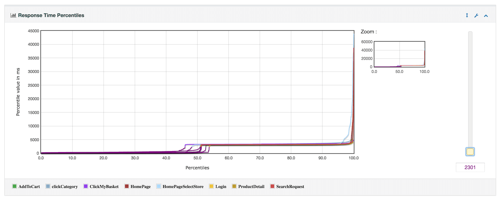

JMeter supports dashboard report generation to get graphs and
statistics from a test plan.
This chapter describes how to configure and use the generator.
The dashboard generator is a modular extension of JMeter.
Its default behavior is to read and process samples from
CSV files to generate HTML files containing graph views.
It can generate the report at end of a load test or on demand.
This report provides the following metrics:
APDEX (Application Performance Index) table that computes for every transaction the APDEX based on configurable values for tolerated and satisfied thresholds
A request summary graph showing the Success and failed requests (Transaction Controller Sample Results are not taken into account) percentage:
A Statistics table providing in one table a summary of all metrics per transaction including 3 configurable percentiles :
An error table providing a summary of all errors and their proportion in the total requests :
A Top 5 Errors by Sampler table providing for every Sampler (excluding Transaction Controller by default) the top 5 Errors :
Zoomable chart where you can check/uncheck every transaction to show/hide it for:
Response times Over Time (Includes Transaction Controller Sample Results) :
Response times Percentiles Over Time (successful responses only) :
Active Threads Over Time :
Bytes throughput Over Time (Ignores Transaction Controller Sample Results) :
Latencies Over Time (Includes Transaction Controller Sample Results) :
Connect Time Over Time (Includes Transaction Controller Sample Results) :
Hits per second (Ignores Transaction Controller Sample Results):
Response codes per second (Ignores Transaction Controller Sample Results):
Transactions per second (Includes Transaction Controller Sample Results):
Response Time vs Request per second (Ignores Transaction Controller Sample Results):
Latency vs Request per second (Ignores Transaction Controller Sample Results):
Response time Overview (Excludes Transaction Controller Sample Results) :
Response times percentiles (Includes Transaction Controller Sample Results): 
Times vs Threads (Includes Transaction Controller Sample Results):
In distributed mode, this graph shows a horizontal axis the number of threads for 1 server. It's a current limitation
Response Time Distribution (Includes Transaction Controller Sample Results):
Dashboard generation uses JMeter properties to customize the
report. Some properties are used for general settings and others are
used for a particular graph configuration or exporter configuration.
All report generator properties can be found in file reportgenerator.properties.
To customize these properties, you should copy them in user.properties file and modify them.
To enable the generator to operate, the input CSV files
must include certain required data. Check that your JMeter
configuration follows these settings (these are the defaults):
jmeter.save.saveservice.bytes = true
# Only available with HttpClient4
#jmeter.save.saveservice.sent_bytes=true
jmeter.save.saveservice.label = true
jmeter.save.saveservice.latency = true
jmeter.save.saveservice.response_code = true
jmeter.save.saveservice.response_message = true
jmeter.save.saveservice.successful = true
jmeter.save.saveservice.thread_counts = true
jmeter.save.saveservice.thread_name = true
jmeter.save.saveservice.time = true
jmeter.save.saveservice.connect_time = true
# the timestamp format must include the time and should include the date.
# For example the default, which is milliseconds since the epoch:
jmeter.save.saveservice.timestamp_format = ms
# Or the following would also be suitable
jmeter.save.saveservice.timestamp_format = yyyy/MM/dd HH:mm:ss
The input CSV file must include the timeStamp
To ensure most accurate results, if you use a transaction controller, uncheck the box:
Generate parent sample
The "Errors" summary table shows more
accurate data if these settings are fulfilled:
If you use a transaction controller, uncheck the box
Generate parent sample
When using JMeter distributed mode with multiple jmeter-server instances, ensure you add in your Thread Groups something that uniquely identifies ThreadGroup for every JVM, example:
ThreadXXX_${__P(JVM_ID)}
where you pass a different JVM_ID property for each jmeter-server through:
-JJVM_ID=i
where i varies between 1 and the number of jmeter-server you are using.
Title used in the generated report.
Default: "Apache JMeter Dashboard"
No
date_format
Default date format from
SimpleDateFormat Java API with Locale.ENGLISH.
Default Date format is yyyyMMddHHmmss
Useful when you would like to generate a report after the load test, and the results file contains timestamp in
another time zone. In this case the date format must include the time zone (zzz).
If jmeter.save.saveservice.timestamp_format does not contain year then use 1970 as year
Example: dd/MM/yyyy HH:mm:ss zzz
No
start_date
Start date of the range of data to use for report.
Date format is defined by date_format property.
Default: not filled which means data range will be used from the beginning
No
end_date
End date of the range of data to use for report.
Date format is defined by date_format property.
Default: not filled which means data range will be used until the end
No
overall_granularity
Granularity of over time graphs. Data is aggregated to have 1 minute ticks.
Granularity must be higher than 1 second (1000) otherwise throughput graphs will be incorrect
Default: "60000" (1 minute)
No
apdex_satisfied_threshold
Sets the satisfaction threshold for the
APDEX
calculation (in ms).
Default: 500
No
apdex_tolerated_threshold
Sets the tolerance threshold for the APDEX calculation
(in ms).
Default: 1500
No
jmeter.reportgenerator.apdex_per_transaction
Sets satisfaction and tolerance threshold to specific samples.
Use sample names or regular expression.
Format is sample_name:satisfaction|tolerance[;]
Values are in milliseconds.
Notice the colon between sample name and values, the pipe between thresholds and the
semicolon at the end to separate different samples. Don't forget to escape after
semicolon to span multiple lines.
Sets the filter of samples to keep for generating
graphs and statistics. An empty value deactivates the
filtering.
Format: Regular expression.
Default: ""
No
temp_dir
Sets the temporary directory used by the generation
process if it needs file I/O
operations.
Default: temp
No
statistic_window
Sets the size of the sliding window used by percentile
evaluation. Caution: higher value provides a
better accuracy but needs more memory.
Default: 20000
No
Percentiles used by Summary table and Percentile graphs can be adjusted to different values by using the 3 properties:
aggregate_rpt_pct1 : Defaults to 90
aggregate_rpt_pct2 : Defaults to 95
aggregate_rpt_pct3 : Defaults to 99
Relative paths are built from the JMeter working directory
(default: bin).
You can define some overall properties which are used by the
generator configuration. These properties are freely named
but you should use the prefix
The fully qualified class name of the graph
The class of the graph must extend
org.apache.jmeter.report.processor.graph.AbstractGraphConsumer.
See
Default graph section
for more details.
Yes
exclude_controllers
Defines
whether the graph discards controller samples.
Default: false
The name of the property will be mapped using camel case
transformation and the matching method of the class will be
called with the property value as argument.
The fully qualified class name of the exporter
The class of the exporter must implement
org.apache.jmeter.report.dashboard.DataExporter
.
Yes
filters_only_sample_series
Defines whether series_filter (see below)
apply only on sample series.
Default: true
No
series_filter
Sets the filter
of series. An empty value deactivates the filtering.
If not empty, regex should end with (-success|-failure)?$
Format: regular expression.
Default: ""
No
show_controllers_only
Defines whether only controller series are shown.
Default: false
Unlike the filtering in the section
General properties
which discards data before calculations, here the
filtering is performed after the calculations and serves
to simplify the final report.
The property series_filter
allows to filter which series of a graph (resp. rows of
a summary table) using regular expression that matches
the name of the series (resp. of the row).
However, even if the name of the
series (resp. row) matches the filter, the setting
of the other filtering properties can lead to its
discarding. Conversely if there is no matching, the
other properties can allow to keep it.
The following tables show how the setting of filtering
properties works.
Cases of discarding when there is pattern matching
filter_only_sample_series
Graph/Summary supports controllers discrimination
The current series is a controller series
show_controllers_only
Discarded
False
False
-
False
False
True
-
False
True
True
False
False
True
True
False
True
True
False
-
False
True
-
False
True
True
False
False
True
True
True
False
False
True
Cases of retention when there is no pattern matching
filter_only_sample_series
Graph/Summary supports controllers discrimination
Kept
False
False
False
True
True
False
True
True
False
Incorrect filter configuration can lead to generate empty
graphs/summary tables:
If you set the property
show_controllers_only
and the graph is configured to exclude
controllers.
If the property
series_filter
matches none series.
You can copy the following configuration to your user.properties
file in order to test the report generator.
# Configure this property to change the report title
#jmeter.reportgenerator.report_title=Apache JMeter Dashboard
# Change this parameter if you want to change the granularity of over time graphs.
# Granularity must be higher than 1000 (1second) otherwise Throughput graphs will be incorrect
# see Bug 60149
#jmeter.reportgenerator.overall_granularity=60000
Change this parameter if you want to change the granularity of Response time distribution
# Set to 500 ms by default
#jmeter.reportgenerator.graph.responseTimeDistribution.property.set_granularity=500
# Change this parameter if you want to override the APDEX satisfaction threshold.
jmeter.reportgenerator.apdex_satisfied_threshold=1500
# Change this parameter if you want to override the APDEX tolerance threshold.
jmeter.reportgenerator.apdex_tolerated_threshold=3000
# Sets the destination directory for generated html pages, it is better to change it for every generation
# This will override the value set through -o command line option
# jmeter.reportgenerator.exporter.html.property.output_dir=/tmp/test-report
# Indicates which graph series are filtered (regular expression)
# In the below example we filter on Search and Order samples
# Note that the end of the pattern should always include (-success|-failure)?$
# Transactions per second suffixes Transactions with "-success" or "-failure" depending
# on the result
#jmeter.reportgenerator.exporter.html.series_filter=^(Search|Order)(-success|-failure)?$
# Indicates whether series filter apply only on sample series
jmeter.reportgenerator.exporter.html.filters_only_sample_series=true
Adapt the parameter
output_dir
to your environment.
This configuration allows to generate a report where:
Over time graphs have a time granularity equal to 1 minute.
The satisfaction threshold for ADPEX calculation is 1 second and half.
The tolerance threshold for ADPEX calculation is 3 seconds.
The HTML files are generated in the directory /tmp/test-report.
Only series which the name begins with "s0" or "s1" are shown.
The previous filter only applies to graphs (resp. summary tables) where the series (resp. rows) match samples
Due to limitations of this early version, each default graph
must be declared in JMeter properties. Otherwise, the graph
views will be empty.
All graphs provided by this report engine are located in the
package
org.apache.jmeter.report.processor.graph.impl
The dashboard generator provides the following graph classes:
Graph
Description
Supports controller discrimination
ActiveThreadsGraphConsumer
This graph represents the number of active threads over time.
False
BytesThroughputGraphConsumer
This graph represents the throughput of received and sent data
over time.
False
CodesPerSecondGraphConsumer
This graph represents the rate of response codes over time.
False
HitsPerSecondGraphConsumer
This graph represents the rate of finished requests over
time.
False
LatencyOverTimeGraphConsumer
This graph represents the average latency time over time.
True
ConnectTimeOverTimeGraphConsumer
This graph represents the connection time over time.
True
LatencyVSRequestGraphConsumer
This graph represents the median and average latency time
depending on the number of current requests.
False
ResponseTimeDistributionGraphConsumer
This graph represents the distribution of the samples
depending on their elapsed time and name.
True
ResponseTimeOverTimeGraphConsumer
This graph represents the average response time over time.
True
ResponseTimePercentilesGraphConsumer
This graph represents the percentiles of the elapsed time
over time.
True
ResponseTimePercentilesOverTimeGraphConsumer
This graph shows Min/Max and 3 percentiles response time over time.
True
ResponseTimeVSRequestGraphConsumer
This graph represents the median and average response time
depending on the number of current requests.
False
TimeVSThreadGraphConsumer
This graph represents the average response time
depending on the number of current active threads.
The *-aggregated series represent the average
response time regardless of the number of
current active threads. These series are
represented by a sole point because the number of
current active threads is aggregated
to an average. So for these points:
The abscissa is the average
of the number of current active
threads when samples of the
series finish.
The ordinate is the average of the
response time for the samples of the
series regardless of the number of current
active threads.
True
TransactionsPerSecondGraphConsumer
This graph represents the rate of transaction by
sample name over time.


 In distributed mode, this graph shows a horizontal axis the number of threads for 1 server. It's a current limitation
In distributed mode, this graph shows a horizontal axis the number of threads for 1 server. It's a current limitation
{kind=link}